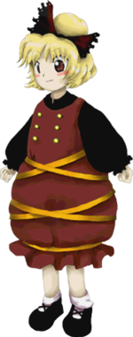

- Welcome to Touhou Wiki!
- Please register to edit. For assistance, check in with our Discord server or IRC channel.
Yamame Kurodani
Yamame Kurodani kɯɽodanʲi jamame (♫) | |
|---|---|
|
Yamame Kurodani in Subterranean Animism The Bright Net in the Dark CaveMore Character Titles | |
| Species | |
| Abilities |
Manipulation of illness (mainly infectious disease) |
| Location | |
Music Themes | |
| |
Appearances | |
| Official Games | |
| |
| Print Works | |
| |
Yamame Kurodani (黒谷 ヤマメ Kurodani Yamame) is the Stage 1 boss in Subterranean Animism, inhabiting the entrance to the Underworld.
General Information[edit]
Yamame is a tsuchigumo – an earth spider – with the ability to manipulate diseases. She first appeared as the Stage 1 boss in Subterranean Animism, then as a stage 3 target in Double Spoiler and as a background character in Hopeless Masquerade. She generally prefers not to use said ability, though, and she has an outgoing nature and a love of fighting. Other youkai like her for her bright personality, but humans stay away because of her ability. In addition, as a tsuchigumo, she is well-suited for building construction due to her physical strength and that of her string. However, she can apparently be reasoned with.
Ability[edit]
Yamame can fire out spider-like webs, where in Double Spoiler, Aya Shameimaru commented that "tsuchigumo are quite skilled and strong, and particularly good with architecture".
- Manipulating illness (mainly infectious disease)
Yamame's ability is manipulation of illness and diseases, with a specialization in infectious ones. The amount of viruses and germs being quite strong, that they infect the atmosphere, and are highly lethal. It can be said to be a natural enemy to humans, who are based upon living in groups. However, with the sensibility of not unreasonably inflicting illness, she herself doesn't have that sort of intention of using it often at all; this is probably due to being tormented with the experience of having inflicted disease on attacking humans in the far past.
It is partially implied in Symposium of Post-mysticism that the main disease she manipulates is influenza, as the only identifiable common symptom is a high fever, and the symptoms themselves change from year to year. It is further implied by the footnote which says that the sickness is called different things each year and even given "types", such as Type A or Type B. As a side note, Eirin Yagokoro is apparently attempting to create a "miracle drug" to cure this specific disease.
Design[edit]
Name[edit]
In an interview released in Cara☆Mel, ZUN mentioned that he figured her name was particularly "spiderish", maybe because spiders are all about their eyes (me, in Japanese). This means that another possible interpretation for her name would be "Yamame" or "八ま目", which roughly translates as "Eight Eyes". Also see Tsuchigumo.
The name "Kurodani" is written with characters that mean "black valley". Yamame may be written as "山女" (lit. mountain girl), which refers to a mythical demon in Japanese folklore.
Appearance[edit]
In Subterranean Animism's official art, Yamame has brown eyes and blonde hair tied up in a bun with a ribbon. She wears a black and brown dress that's poofy under the waist, some black shoes with white socks, and a yellow ribbon tied around her lower body. The number of buttons on her outfit adds up to the total amouth of eight eyes a spider has.
Story[edit]
Games[edit]
| Attention: This section is a stub and it needs expanding with more information related to the section's topic. If you can add to it in any way, please do so. |
- Subterranean Animism
During the events of Subterranean Animism, she mistook the heroine as a youkai from the surface and attacked; she was defeated quickly.
- Main article: Reimu & Yukari Arc
Reimu complains about the conditions of the cave, where suddenly she hears Yukari's voice. Noticing Reimu's confusion, Yukari explains that she's talking through the yin-yang orbs. Yamame enters, and seems interested that a human has entered the cave. Yukari immediately tells Reimu to defeat Yamame. Yamame, confused by Reimu "talking to herself", attacks. After Yamame is defeated, Reimu wonders if she talks to herself too much.
- Main article: Reimu & Suika Arc
Reimu complains about the conditions of the cave, and thinks she's hearing things when she hears Suika's voice. Suika explains that Yukari set up the yin-yang orbs for them to talk through. Yamame enters, and seems interested that a human entered the cave. While Suika rambles on about the orbs, Reimu tells her about Yamame's appearance, where Suika replies how it's "nostalgic". Yamame sees Reimu as suspicious, so she attacks. After she is defeated, Reimu figures out that Suika has fallen asleep.
- Main article: Reimu & Aya Arc
Reimu complains about the conditions of the cave, and wonders if she's hearing things when she hears Aya's voice. Aya explains the yin-yang orbs allow them to communicate. Reimu figures that it's Yukari's doing. Yamame shows up, wondering where Aya's voice is coming from. Aya becomes excited, seeing that someone showed up. Yamame thinks Reimu is talking to herself. Reimu explains she's not ignoring her, and that she'll take out her anger against boredom on her. Yamame attacks. Upon defeat, Aya explains that Yamame was an earth spider.
- Main article: Marisa & Alice Arc
Marisa wonders about the strange conditions of the cave, and upon hearing Alice's voice, denies that she hears it altogether. Marisa then realizes that she can use the dolls for communicating as well as attacking. Alice explains that Yukari made them. Yamame enters, curious about why Marisa came underground. Marisa explains that she never wanted to come underground because there were hot springs above ground. When Alice and Marisa begin to talk to each other again, Yamame thinks Marisa is talking to herself. Marisa says she mumbling about how to beat her. Yamame sees her as a threat, and attacks. After she is defeated, Marisa complains about defeating someone unrelated.
- Double Spoiler
In Double Spoiler, Yamame used a few spell cards and had Aya Shameimaru and Hatate Himekaidou taking photos of her and her danmaku.
- Hopeless Masquerade
Yamame made a background cameo appearance in Hopeless Masquerade on the Palace of Earth Spirits stage. She is seen at the top of the screen upside-down.
Literature[edit]
- Symposium of Post-mysticism
Byakuren Hijiri mentions that Yamame came to the surface at one point to try and enter the Myouren Temple, but the monk denied her entrance as Yamame's reasons were essentially because she thinks the worried people that come to the temple look delicious.
Gallery[edit]
Yamame's sigil as seen in The Grimoire of Marisa.
Spell Cards[edit]
| Name | Translated | Comments | Games | Stage | ||
|---|---|---|---|---|---|---|
| Total: 6 | ||||||
| 罠符「キャプチャーウェブ」 | Trap Sign "Capture Web" | SA | St. 1: E/N | |||
| 蜘蛛「石窟の蜘蛛の巣」 | Spider "Cave Spider's Nest" | SA GoM |
St. 1: H/L ---- | |||
| 瘴符「フィルドミアズマ」 | Miasma Sign "Filled Miasma" | SA GoM |
St. 1: E/N ---- | |||
| 瘴気「原因不明の熱病」 | Miasma "Unexplained Fever" | SA | St. 1: H/L | |||
| 細綱「カンダタロープ」 | Small Thread "Kandata's Rope" | DS | St. 3 | |||
| 毒符「樺黄小町」 | Poison Sign "Japanese Foliage Spider" | DS | St. 3 | |||
Additional Information[edit]
- Subterranean Animism's demo CD featured Yamame on the cover (upside down).
Fandom[edit]
Official Profiles[edit]
|  | ○１面ボス 暗い洞窟の明るい網 黒谷ヤマメ（くろだに やまめ） 種族：土蜘蛛 旧都や洞窟の奥底で活動している妖怪。 ただその能力から会う者全てに嫌がられる。しかし、本人は無闇に相手を病に冒したりはしない。よく話をしてみると明るく楽しい妖怪で、地下の妖怪達の人気者である。 |
Stage 1 boss The Bright Net in the Dark Cave Yamame Kurodani Species: Tsuchigumo A youkai that lives primarily in abandoned cities and deep in caves. Her power makes everyone she meets hate her. However, she herself wouldn't inflict disease on someone without reason. She's a bright, fun-loving youkai if you get to know her, so she's popular among the youkai that live underground. |
Official Sources[edit]
- 2008/05/25 - Subterranean Animism Demo - Trial profile (pre-official profile)
- 2008/08/16 - Subterranean Animism - Settings.txt (official profile)
- 2008/12/25 - Interview on Subterranean Animism with Cara☆Mel (Nico Nico Video link)
- 2009/07/28 - The Grimoire of Marisa - Yamame Kurodani's Spell Cards
- 2010/03/14 - Double Spoiler - Stage 3 Spell Cards
- 2010/08/26 - Oriental Sacred Place - Chapter 10 (appearance only)
- 2012/04/27 - Symposium of Post-mysticism
| This page is part of Project Characters, a Touhou Wiki project that aims to write proper descriptions for all official characters of Touhou Project. Please keep the character page guidelines in mind when contributing. |